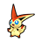

Access to:
Accessible via the ferry: Castelia City (Liberty Pier)
Accessing this area requires obtaining the Liberty Pass item and using it to ride the ferry in Castelia City. The Liberty Pass was only available via an event release for Black and White in 2010 and 2011. The Liberty Pass can be obtained with hacks or cheats.
| Pokémon | Level | Notes | |
|---|---|---|---|
|
 |
Victini | 15 | In the basement of the lighthouse. If defeated or run from, it reappears upon leaving the area. It cannot be Shiny. |
| Item | Location | Notes |
|---|---|---|
| Ultra Ball | In a trash can outside the lighthouse | Hidden. |
| Trainer | Party | Notes |
|---|---|---|
| Team Plasma Grunt | Patrat lv.18 | Outside. |
| Team Plasma Grunt | Sandile lv.17 Patrat lv.17 |
Outside. |
| Team Plasma Grunt | Sandile lv.18 | Outside. |
| Team Plasma Grunt | Patrat lv.17 Scraggy lv.17 |
In the lighthouse. |
| Team Plasma Grunt | Watchog lv.20 | In the lighthouse basement. |